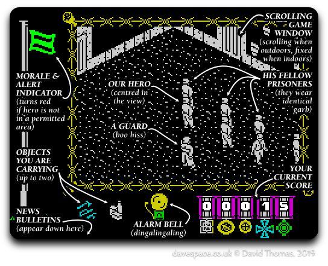

The Great Escape is a classic 1986 prison break game for the 48K ZX Spectrum]. I've spent a considerable amount of time reverse engineering its routines and documenting its workings while simultaneously reimplementing it as portable C code. The following pages describe the process I went through.
This is an expanded-upon write-up of some of what I can dimly recall saying while presenting these slides to my team at INSIDE Secure (formerly Metaforic, now called Verimatrix) in Glasgow at a talk in January 2016.